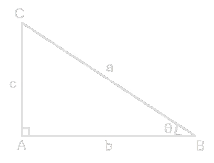

Teorema de Pitágoras

O Teorema de Pitágoras é uma relação matemática fundamental em triângulos retângulos, onde a soma dos quadrados dos catetos (b e c) é igual ao quadrado da hipotenusa (a), expressa pela fórmula a² = b² + c². A hipotenusa é sempre o lado mais longo, oposto ao ângulo reto de 90°.
Mais sobre o Pitágoras
Catetos

- Cateto oposto: O cateto oposto é o lado de um triângulo retângulo situado diretamente em frente a um ângulo de referência agudo, nesse caso o theta, não participando de sua formação.
- Cateto adjacente: O cateto adjacente é o lado de um triângulo retângulo que toca o ângulo de referência (agudo) analisado, sem ser a hipotenusa.
Seno, cosseno e tangente
Seno, cosseno e tangente são razões trigonométricas fundamentais no triângulo retângulo, relacionando os lados (catetos e hipotenusa) a ângulos agudos.
- Seno: O seno é uma razão trigonométrica fundamental que representa a proporção entre o cateto oposto a um ângulo agudo e a hipotenusa em um triângulo retângulo. Sua fórmula é Cateto oposto/Hipotenusa, ou, c/a (em relação aos exemplos acima);
- Cosseno: O cosseno é uma função trigonométrica fundamental que, em um triângulo retângulo, representa a razão entre o comprimento do cateto adjacente ao ângulo e a hipotenusa. Sua fórmula é Cateto adjacente/Hipotenusa, ou, b/a (em relação aos exemplos acima);
- Tangente: A tangente é uma função trigonométrica e um conceito geométrico que representa a razão entre o cateto oposto e o cateto adjacente de um ângulo em um triângulo retângulo. Sua fórmula é Cateto oposto/Cateto adjacente, ou, c/b (em relação aos exemplos acima).
Ângulos notáveis
Eles recebem esse nome porque aparecem com muita recorrência em exercícios e cálculos, e seus valores de seno, cosseno e tangente podem ser facilmente deduzidos ou memorizados, sendo fundamentais para resolver problemas envolvendo razões trigonométricas.
| 30° | 45° | 60° | |
|---|---|---|---|
| sen | 1/2 | √2/2 | √3/2 |
| cos | √3/2 | √2/2 | 1/2 |
| tg | √3/3 | 1 | √3 |
Leis
- Lei dos senos: A lei dos senos estabelece que, em qualquer triângulo, as medidas dos lados são proporcionais aos senos dos ângulos opostos. a/sen A = b/sen B = c/sen C.
- Lei dos cossenos: A lei dos cossenos é uma fórmula trigonométrica usada para encontrar lados ou ângulos em qualquer triângulo. Ela relaciona os três lados com o cosseno de um ângulo interno: a² = b² + c² * cos A, ou b² = a² + c² * cos B, c² = b² + a² * cos C.